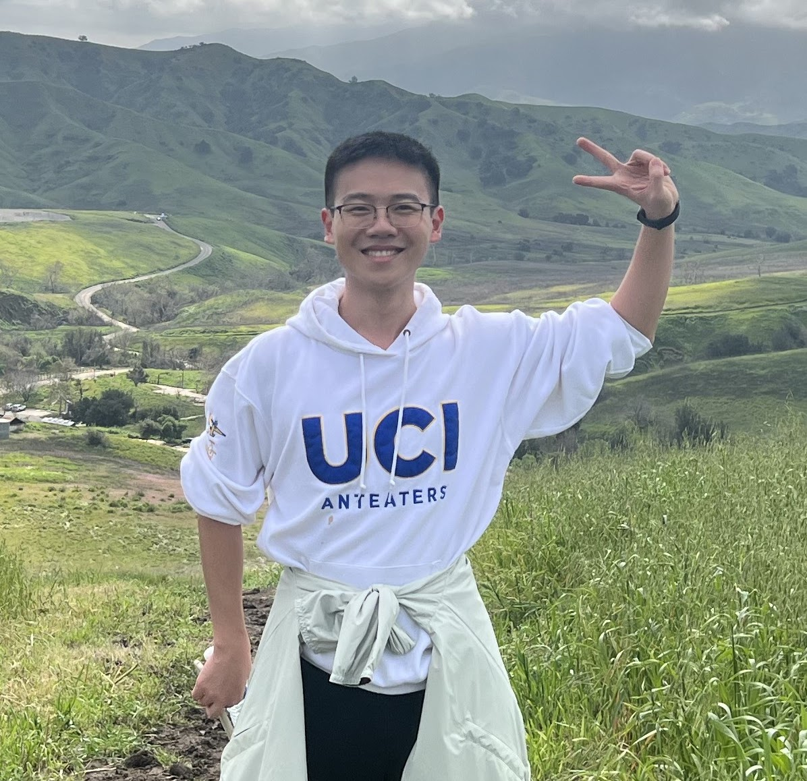

Yiyun He
Email: yih130 [ a t ] ucsd.edu Office: APM 6311 Google Scholar
I am a SEW Visiting Assistant Professor in the Mathematics Department at the University of California, San Diego. Before that, I obtained my Ph.D. degree from the Mathematics Department at the University of California, Irvine, under the supervision of my advisor, Professor Roman Vershynin. I obtained my bachelor's degree in Mathematics and Applied Mathematics from the University of Science and Technology of China in 2020. My personal CV is here.
My research is mainly in probability theory, including data science, differential privacy, random matrices, combinatorics, randomized numerical linear algebra, etc.
I am currently attending a semester-long workshop at ICERM.

Publications and Preprints
- FL-Sailer: Efficient and Privacy-Preserving Federated Learning for Scalable Single-Cell Epigenetic Data Analysis via Adaptive Sampling with Guangyi Zhang, Yi Dai, Junhao Liu.
Transactions on Machine Learning Research, 2026. - Minimax optimal differentially private synthetic data for smooth queries with Rundong Ding, Yizhe Zhu.
Extended abstract published in Proceedings of the Thirty-Ninth Conference on Learning Theory (COLT), 2026. - A note on the improved sparse Hanson-Wright inequalities with Guosheng Dai, Ke Wang, Yizhe Zhu.
Preprint, 2025. - Sparse Hanson-Wright Inequalities with Applications with Ke Wang, Yizhe Zhu.
Electronic Journal of Probability, 2026. - Online Differentially Private Synthetic Data Generation with Roman Vershynin and Yizhe Zhu.
IEEE Transactions on Privacy, 2024. - Differentially Private Low-dimensional Synthetic Data from High-dimensional Datasets with Thomas Strohmer, Roman Vershynin and Yizhe Zhu.
Information and Inference, 2024. - Algorithmically Effective Differentially Private Synthetic Data with Roman Vershynin and Yizhe Zhu.
Proceedings of the Thirty-Sixth Conference on Learning Theory (COLT), PMLR 195:3941–3968, 2023. [conference proceedings] - Strong quantum nonlocality and unextendibility without entanglement in N-partite systems with odd N with Fei Shi and Xiande Zhang.
Quantum, 2023.
Travels and Conferences
- Jan–May, 2026, Stochastic and Randomized Algorithms in Scientific Computing: Foundations and Applications, ICERM, Providence, RI
- Dec 8–12, 2025, Desert Discrete Math Workshop III, Anza-Borrego Desert Research Center of UCI, Borrego Springs, CA
- Sep 8–12, 2025, Random Matrix Theory Summer School, Kyoto, Japan
- Apr 20–26, 2025, Desert Discrete Math Workshop II, Anza-Borrego Desert Research Center of UCI, Borrego Springs, CA
- Oct 26–27, 2024, AMS Western Sectional Meeting, University of California, Riverside, CA
- Aug 6–15, 2024, Princeton Machine Learning Theory Summer School, Princeton University, Princeton, NJ
- Jun 17–28, 2024, Random Matrix Theory Summer School, University of Michigan, Ann Arbor, MI
- May 20–22, 2024, Random Matrices and Applications Workshop, ICERM, Providence, RI
- Apr 27, 2024, Southern California Applied Mathematics Symposium, University of California, San Diego, CA
- Feb 25–28, 2024, The 35th International Conference on Algorithmic Learning Theory (ALT 2024), San Diego, CA
- Feb 18–23, 2024, Information Theory and Applications Workshop (ITA 2024), San Diego, CA
- Jan 21–27, 2024, Desert Discrete Math Workshop, Anza-Borrego Desert Research Center of UCI, Borrego Springs, CA
- Jan 3–6, 2024, Joint Mathematics Meeting, San Francisco, CA
- Jul 12–15, 2023, 36th Annual Conference on Learning Theory (COLT 2023), Bangalore, India
- Jun 26–30, 2023, Princeton Machine Learning Theory Summer School, Princeton University, Princeton, NJ
- May 22–26, 2023, Summer School on Random Matrix Theory and Its Applications, the Ohio State University, Columbus, OH
- Apr 22, 2023, Southern California Applied Mathematics Symposium, University of California, Irvine, CA
- Apr 13–14, 2023, UCLA Synthetic Data Workshop, Los Angeles, CA
- Feb 12–17, 2023, Information Theory and Applications Workshop (ITA 2023), San Diego, CA
- Jun 13–24, 2022, Random Matrix Theory Summer School, University of Michigan, Ann Arbor, MI
- May 23–27, 2022, Workshop in Convexity and High-Dimensional Probability, Georgia Institute of Technology, Atlanta, GA
- Jul 17–Aug 13, 2016, Tsinghua Yau's Mathcamp, Tsinghua University, Beijing, China
Teaching Experience
- Math 10A Calculus I, UCSD, Fall 2025
TA
- Math 2A Calculus I, Teaching Assistant, UCI, Summer 2024
- Directed Reading Program, on the topic Differential Privacy, Mentor, UCI, Spring 2024
- Math 130B Probability II, Teaching Assistant, UCI, Spring 2024
- Math 121A Linear Algebra I, Teaching Assistant, UCI, Fall 2021
- Math 121A Linear Algebra I, Reader, UCI, Summer 2021
- Math 140A Elementary Analysis, Reader, UCI, Spring 2021
- Combinatorics, Teaching Assistant, USTC, Fall 2019